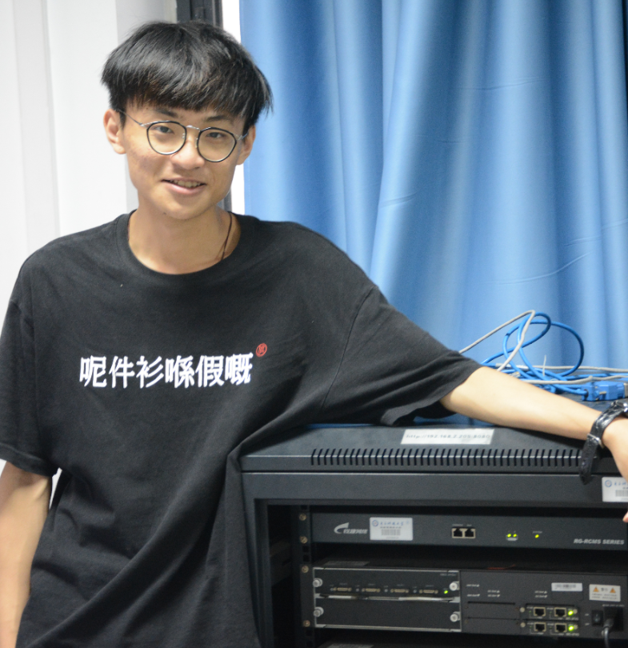

🙌 Welcome to zobinHuang
Hi there! 👋 I am Zhuobin Huang, a senior in UESTC (University of Electronic Science and Technology of China, Chinese: 中国电子科技大学), and I intend to take my ME (Master in Engineering) in UESTC under the guidance of Prof. Shizhong Xu from 2021 to 2024.
My research strongly related to build high-end datacenter network to accelerate top applications such as distributed machine learning, stream processing and large-scale database, which mainly involves: (1) architecture that leveraging heterogeneous computing such as FPGA-based & SoC-based SmartNIC to offload proper applications from CPU to both improve network processing performance and reduce unnecessary overhead on the host. (2) Optimization of sketch-based network measurement from the level of top algorithm to underlying architecture.
Beside of networking, I am also very interested in the whole architecture of server machine including operating systems, ISA, storage, accelerator(e.g. GPU, DPU), which forms my daily reading content on books & others' blogs. In a word, I am very interested in how software interact with hardware!
I appreciate your attention of my work and welcome any form of discussion if you like! Thanks for your visting!
📕 Organization of This Website
| Section | Content |
|---|---|
| Research | Some of my research work since 2019 |
| Project | Some of my interesting projects since 2018 |
| Internship | Sharing of my internship experience since 2020 |
| Learning | My daily learning notes, welcome to comment and contribute! |
| Amateur Musician | Sharing of my music work which all produced by myself |
This website will cover most of my researches & projects since 2017. Most of my research work were contributed when I worked in the Team of Smart Network and Application in UESTC which I have joining since May 2019, I really appreciate all guidance from it.
I like systematic knowledge, so I will also write down my learning notes in this website which cover Linux kernel development, FPGA RTL design and networking-related technology, etc.
Besides, I am also an so-called "amateur musician", so I will also share some of my music work since 2017 which all produced by myself. I like producing my own music, this is my biggest hobby.
Anyway, please feel free to discuss with me for any interesting topics if you want. You can refer to the “Contact” section for my detailed contact information, or just leave a comment on any post you're confused about sth or interested in.